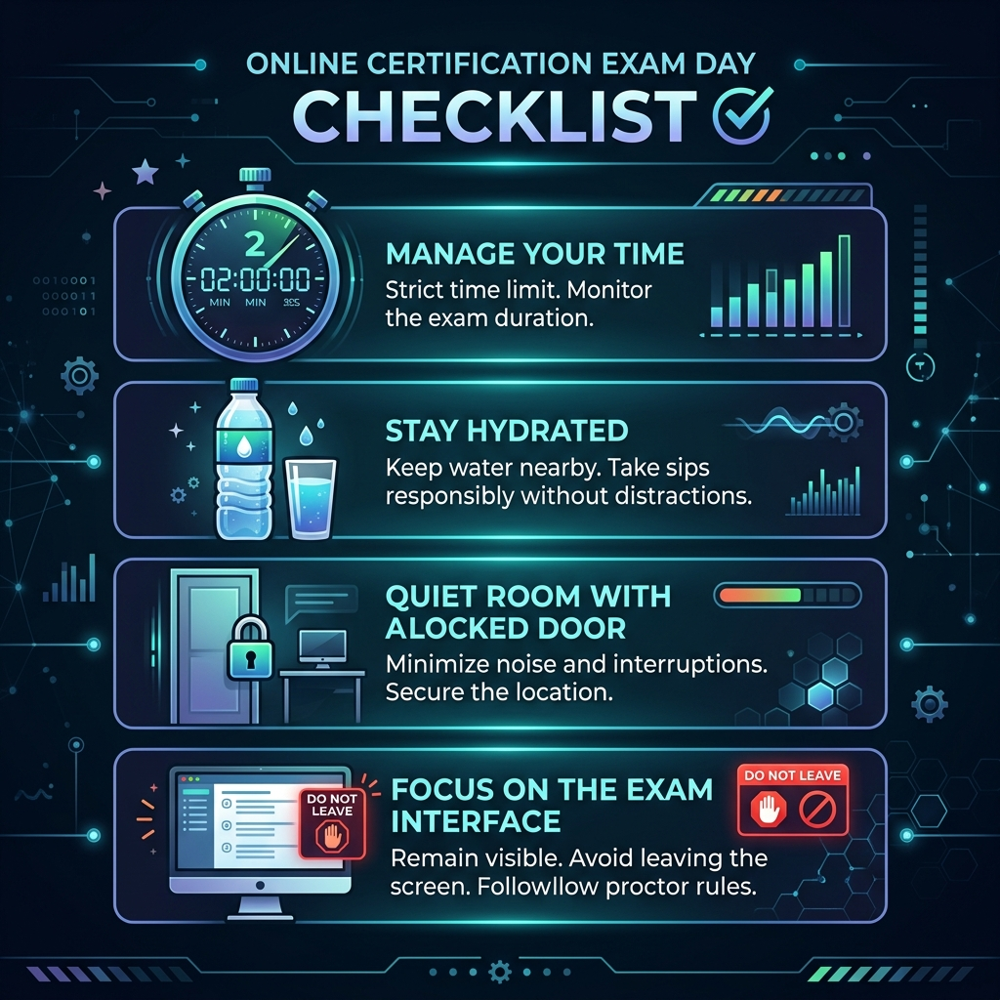

Practical rules, scheduling protocols, and environmental requirements to set you up for success during the 2-hour proctored test.
The Claude Developer Certification exam is a strict, online-proctored assessment. Understanding the rules beforehand ensures you don't get disqualified due to environmental or scheduling mistakes.

The exam duration is exactly 2 hours. Once started, the timer cannot be paused. Make sure your computer is plugged into a reliable power source.
Get a bottle of water ready on your desk before starting. Drinking water helps maintain concentration during intense problem-solving sessions.
Select a private, quiet room. Warn members of your household, lock the door, and ensure no background noise (such as televisions, music, or conversation) is present.
Expect not to leave the computer for any reason. Proctors require you to remain visible in the webcam frame at all times. Leaving your seat or looking away repeatedly can flag your session.